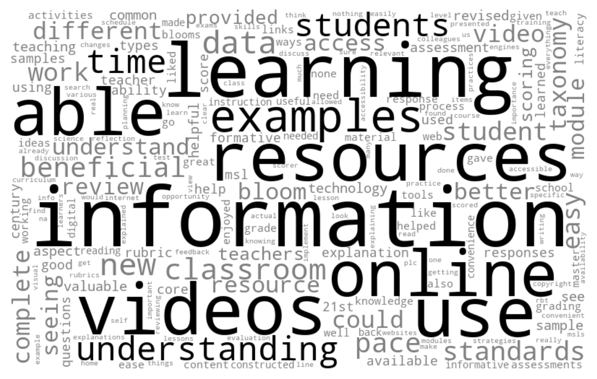

# YOUR FINAL CODE HERELab 1 Badge: Text Mining Basics

The final activity for each learning lab provides space to work with data and to reflect on how the concepts and techniques introduced in each lab might apply to your own research.
To earn a badge for each lab, you are required to respond to a set of prompts for two parts:
In Part I, you will reflect on your understanding of key concepts and begin to think about potential next steps for your own study.
In Part II, you will create a simple data product in R that demonstrates your ability to apply a data analysis technique introduced in this learning lab.
Part I: Reflect and Plan
Use the institutional library (e.g. NCSU Library), Google Scholar or search engine to locate a research article, presentation, or resource that applies text mining to an educational context or topic of interest. More specifically, locate a text mining study that visualize text data.
Provide an APA citation for your selected study.
How does the visualization address research questions?
Draft a research question for a population you may be interested in studying, or that would be of interest to educational researchers, and that would require the collection of text data and answer the following questions:
What text data would need to be collected?
For what reason would text data need to be collected in order to address this question?
Explain the analytical level at which these text data would need to be collected and analyzed.
Part II: Data Product
Use your case study file to create a new word cloud that does not include words that would give you important information about teachers’ experiences with professional development. (For example, we did not include “University” in the word cloud describing where scholar came from as it occurs everywhere).
I highly recommend creating a new Python script in your lab-1 folder to complete this task. When your code is ready to share, use the code chunk below to share the final code for your model and answer the questions that follow.
!pip install pandas nltk matplotlib wordcloud
import pandas as pd
import nltk
import matplotlib.pyplot as plt
from wordcloud import WordCloudRequirement already satisfied: pandas in /cloud/project/r-reticulate/lib/python3.11/site-packages (2.2.2)
Requirement already satisfied: nltk in /cloud/project/r-reticulate/lib/python3.11/site-packages (3.8.1)
Requirement already satisfied: matplotlib in /cloud/project/r-reticulate/lib/python3.11/site-packages (3.9.0)
Requirement already satisfied: wordcloud in /cloud/project/r-reticulate/lib/python3.11/site-packages (1.9.3)
Requirement already satisfied: numpy>=1.23.2 in /cloud/project/r-reticulate/lib/python3.11/site-packages (from pandas) (1.26.4)
Requirement already satisfied: python-dateutil>=2.8.2 in /cloud/project/r-reticulate/lib/python3.11/site-packages (from pandas) (2.9.0.post0)
Requirement already satisfied: pytz>=2020.1 in /cloud/project/r-reticulate/lib/python3.11/site-packages (from pandas) (2024.1)
Requirement already satisfied: tzdata>=2022.7 in /cloud/project/r-reticulate/lib/python3.11/site-packages (from pandas) (2024.1)
Requirement already satisfied: click in /cloud/project/r-reticulate/lib/python3.11/site-packages (from nltk) (8.1.7)
Requirement already satisfied: joblib in /cloud/project/r-reticulate/lib/python3.11/site-packages (from nltk) (1.4.2)
Requirement already satisfied: regex>=2021.8.3 in /cloud/project/r-reticulate/lib/python3.11/site-packages (from nltk) (2024.5.15)
Requirement already satisfied: tqdm in /cloud/project/r-reticulate/lib/python3.11/site-packages (from nltk) (4.66.2)
Requirement already satisfied: contourpy>=1.0.1 in /cloud/project/r-reticulate/lib/python3.11/site-packages (from matplotlib) (1.2.1)
Requirement already satisfied: cycler>=0.10 in /cloud/project/r-reticulate/lib/python3.11/site-packages (from matplotlib) (0.12.1)
Requirement already satisfied: fonttools>=4.22.0 in /cloud/project/r-reticulate/lib/python3.11/site-packages (from matplotlib) (4.53.0)
Requirement already satisfied: kiwisolver>=1.3.1 in /cloud/project/r-reticulate/lib/python3.11/site-packages (from matplotlib) (1.4.5)
Requirement already satisfied: packaging>=20.0 in /cloud/project/r-reticulate/lib/python3.11/site-packages (from matplotlib) (24.0)
Requirement already satisfied: pillow>=8 in /cloud/project/r-reticulate/lib/python3.11/site-packages (from matplotlib) (10.3.0)
Requirement already satisfied: pyparsing>=2.3.1 in /cloud/project/r-reticulate/lib/python3.11/site-packages (from matplotlib) (3.1.2)
Requirement already satisfied: six>=1.5 in /cloud/project/r-reticulate/lib/python3.11/site-packages (from python-dateutil>=2.8.2->pandas) (1.16.0)
[notice] A new release of pip is available: 24.0 -> 24.1.2
[notice] To update, run: pip install --upgrade pip# Read data
opd_survey = pd.read_csv('data/opd_survey.csv', low_memory=False)
# Subset the DataFrame to select specific columns
opd_selected = opd_survey[['Role', 'Resource', 'Q21']]
# Rename the 'Q21' column to 'text'
opd_renamed = opd_selected.rename(columns={'Q21': 'text'})
# Remove the first two rows from the opd_renamed DataFrame
opd_sliced = opd_renamed.iloc[2:].copy()
# Remove rows with missing data from the copied DataFrame
opd_complete = opd_sliced.dropna().copy()
# Filter the DataFrame for rows where 'Role' is equal to "Teacher"
opd_teacher = opd_complete[opd_complete['Role'] == 'Teacher'].copy()
# Display the filtered DataFrame
print(opd_teacher.head()) Role Resource \
6 Teacher Live Webinar
7 Teacher Online Learning Module (e.g. Call for Change, ...
11 Teacher Online Learning Module (e.g. Call for Change, ...
13 Teacher Online Learning Module (e.g. Call for Change, ...
18 Teacher Online Learning Module (e.g. Call for Change, ...
text
6 levels ofquestioning and revised blooms
7 None, really.
11 In any of the modules when a teacher is shown ...
13 Understanding the change
18 overview of reasons for change # Tokenize
from nltk.tokenize import RegexpTokenizer
# Use RegexpTokenizer to remove punctuation and convert to lowercase
tokenizer = RegexpTokenizer(r'\w+')
# Tokenize the 'text' column and create a new column 'word'
opd_teacher['word'] = opd_teacher['text'].apply(lambda x: [token.lower() for token in tokenizer.tokenize(str(x))])
# Explode the 'word' column to transform each row into individual words
opd_tidy = opd_teacher.explode('word')
# Drop the original 'text' column
opd_tidy.drop(columns=['text'], inplace=True)
# Display the tokenized DataFrame
print(opd_tidy.head()) Role Resource word
6 Teacher Live Webinar levels
6 Teacher Live Webinar ofquestioning
6 Teacher Live Webinar and
6 Teacher Live Webinar revised
6 Teacher Live Webinar bloomsfrom nltk.corpus import stopwords
# Ensure the stopwords is downloaded
nltk.download('stopwords')
# Get the list of stopwords from nltk
stop_words = set(stopwords.words('english'))
# Remove stop words
opd_clean = opd_tidy[~opd_tidy['word'].isin(stop_words)]
# Display the clean DataFrame
print(opd_clean.head()) Role Resource word
6 Teacher Live Webinar levels
6 Teacher Live Webinar ofquestioning
6 Teacher Live Webinar revised
6 Teacher Live Webinar blooms
7 Teacher Online Learning Module (e.g. Call for Change, ... none[nltk_data] Downloading package stopwords to
[nltk_data] /home/r1592218/nltk_data...
[nltk_data] Package stopwords is already up-to-date!# Count the occurrences of each word across all the resources
words_count = opd_clean['word'].value_counts().reset_index()
words_count.columns = ['word', 'count']
# Print the word count of the top 10 words
print("Top 10 words and their counts:")
print(words_count.head(10))Top 10 words and their counts:
word count
0 information 1885
1 learning 1520
2 videos 1385
3 use 1327
4 resources 1286
5 able 1186
6 online 1139
7 examples 1105
8 understanding 1092
9 time 1083from wordcloud import WordCloud
import matplotlib.pyplot as plt
# Filter out the word 'university' and words with counts greater than 1000
filtered_words_count = words_count[words_count['word'] != 'university']
words_count_above_1000 = set(filtered_words_count[filtered_words_count['count'] > 1000]['word'])
# Define custom coloring function
def color_func(word, font_size, position, orientation, random_state=None, **kwargs):
if word in words_count_above_1000:
return 'black' # Use black color for words occurring more than 1000 times
else:
return 'grey' # Use gray color for the rest
# Generate a word cloud with custom coloring function
wordcloud = WordCloud(width=800, height=500, background_color='white', color_func=color_func).generate_from_frequencies(dict(zip(filtered_words_count['word'], filtered_words_count['count'])))
# Display the word cloud using matplotlib
plt.figure(figsize=(10, 5))
plt.imshow(wordcloud, interpolation='bilinear')
plt.axis('off')
plt.show()
Knit & Submit
Congratulations, you’ve completed your Intro to text mining Badge! Complete the following steps in the orientation to submit your work for review.